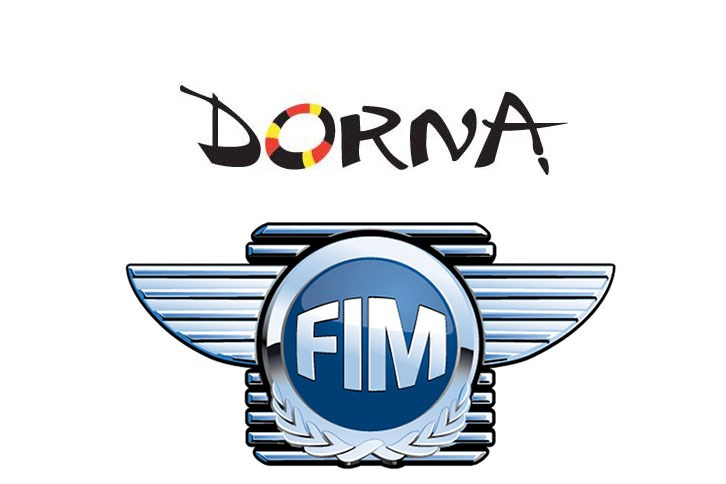

Dorna
Discover what’s inside Dorna Bringing direction and harmony to the most exciting racing spectacle on the planet Dorna Sports is the exclusive commercial and television rights holder of the FIM Road Racing World Championship Grand Prix (MotoGPTM), along with the MOTUL FIM Superbike World Championship (WorldSBK), FIM Enel MotoE World Cup, FIM CEV Repsol, Red Bull MotoGPTM Rookies Cup, Idemitsu Asia Talent Cup y British Talent Cup.
Sejarah Moto GP World Championship

- Tahun 1949 - 1970
- Tahun 1970 - 2000
- Tahun 2002 - Sekarang
- Revolusi 2003
- Tahun 2007 - Saat ini
Kejuaraan dunia untuk balap motor pertama kali diselenggarakan oleh Fédération Internationale de Motocyclisme (FIM), pada tahun 1949. Pada saat itu secara tradisional telah diselenggarakan beberapa balapan di tiap event untuk berbagai kelas motor, berdasarkan kapasitas mesin, dan kelas untuk sidecars (motor bersespan). Kelas-kelas yang ada saat itu adalah 50 cc, 125 cc, 250 cc, 350 cc, dan 500 cc untuk motor single seater, serta 350 cc dan 500 cc untuk motor sidecars. Memasuki tahun 1950-an dan sepanjang 1960-an, motor bermesin 4 tak mendominasi seluruh kelas. Pada akhir 1960-an, motor bermesin 2 tak mulai menguasai kelas-kelas kecil.
Pada tahun 1970-an motor bermesin 2 tak benar-benar menyingkirkan mesin-mesin 4 tak. Pada periode ini beberapa motor seperti Kawasaki H1-R, MV Agusta 500 Three, memilih menggunakan mesin dua langkah tiga silinder. Dengan motor tiga silinder nya, MV Agusta sukses memborong juara dunia pembalap dalam rentang 1966 - 1973. Tahun-tahun sebelumnya, MV Agusta juga sukses dengan motor empat silinder nya sejak 1956 - 1965 melalui pembalapnya John Surtees, Gary Hocking dan Mike Hailwood. Pemilihan mesin tiga silinder biasanya dilatarbelakangi untuk mendapatkan bobot yang ringan sehingga sehingga mampu mengeksekusi tikungan lebih cepat dan memperoleh hasil kualifikasi yang lebih baik Pada tahun 1979, Honda berusaha mengembalikan mesin 4 tak di kelas puncak dengan menurunkan motor NR500, namun proyek ini gagal, dan bahkan pada tahun 1983 Honda mampu meraih kemenangan dengan motor 500 cc 2 tak miliknya. Pada tahun 1983, kelas 350 cc akhirnya dihapuskan. Kelas 50 cc kemudian digantikan oleh kelas 80 cc pada tahun 1984, tetapi kelas yang sering didominasi oleh pembalap dari Spanyol dan Italia ini akhirnya ditiadakan pada tahun 1990. Kelas sidecars juga ditiadakan dari kejuaraan dunia pada tahun 1990-an, menyisakan kelas 125 cc, 250 cc, dan kelas 500 cc. Di era 1997-an saat kebanyakan motor Grand Prix 500 menggunakan mesin empat silinder, KR3 Modenas tercatat sebagai satu-satunya tim sekaligus pabrikan yang masih menggunakan mesin tiga silinder. Sayang sampai dengan datangnya era 4-tak mesin tiga silinder KR3 tidak bisa berbuat banyak, karena kalah power dengan mesin emapt silinder meskipun di sisi lain memperoleh benefit dari segi bobot. GP 500, kelas yang menjadi puncak balap motor Grand Prix, telah berubah secara dramatis pada tahun 2002. Dari pertengahan tahun 1970-an sampai 2001 kelas puncak dari balap GP ini dibatasi 4 silinder dan kapasitas mesin 500 cc, baik jenis mesin 4 tak ataupun 2 tak. Akibatnya, yang mampu bertahan adalah mesin 2 tak, yang notabene menghasilkan tenaga dan akselerasi yang lebih besar.
Merupakan tahun transisi, periode terakhir mesin dua langkah diperlombakan dalam kompetisi kelas premier. Sepanjang tahun 2002 sampai 2006 untuk pertama kalinya pabrikan diizinkan untuk memperbesar kapasitas total mesin khusus untuk mesin 4 tak menjadi maksimum 990 cc, dan berubah menjadi 800 cc di musim 2007. Pabrikan juga diberi kebebasan untuk memilih jumlah silinder yang digunakan antara tiga sampai enam dengan batas berat tertentu. Dengan dibolehkannya motor 4 tak ber-cc besar tersebut, kelas GP 500 diubah namanya menjadi MotoGP. Seluruh tim pabrikan seperti Yamaha, Honda, dan Suzuki masing-masing memilih untuk berkompetisi menggunakan mesin empat langkah terbarunya. Praktis, hanya tim satelit saja yang masih berkompetisi menggunakan mesin 500 cc dua langkah.
Seluruh tim di kelas premier motoGP tidak ada lagi yang menggunakan mesin dua langkah. Tersisa kelas 125 cc dan 250 cc saja yang masih belum diatur transisi nya menuju ke era empat langkah. Setelah tahun 2003 tidak ada lagi mesin 2 tak yang turun di kelas MotoGP. Untuk kelas 125 cc dan 250 cc secara khusus masih menggunakan mesin 2 tak.
Perubahan yang terjadi sebatas perihal kubikasi maksimal yang diperkenankan yang diturunkan menjadi maksimum 800 cc di tahun 2007 dan berlangsung selama lima musim. Di tahun 2012 hingga sekarang, batas kubikasi mesin ini kembali dinaikkan menjadi 1,000 cc. Balap untuk kelas MotoGP saat ini diselenggarakan sebanyak 17 seri di 15 negara yang berbeda (Spanyol menggelar 3 seri balapan). Balapan biasa digelar setiap akhir pekan dengan beberapa tahap. Hari Jum'at digelar latihan bebas dan latihan resmi pertama, kemudian hari Sabtu dilaksanakan latihan resmi kedua dan QTT, di mana para pembalap berusaha membuat catatan waktu terbaik untuk menentukan posisi start mereka. Balapan sendiri digelar pada hari Minggu, meskipun ada seri yang digelar hari Sabtu yaitu di Belanda dan Qatar. Grid (baris posisi start) terdiri dari 3 pembalap perbaris dan biasanya setiap seri balap diikuti oleh sekitar 20 pembalap. Balapan dilaksanakan selama sekitar 45 menit dan pembalap berlomba sepanjang jumlah putaran yang ditentukan, tanpa masuk pit untuk mengganti ban atau mengisi bahan bakar. Balapan akan diulang jika terjadi kecelakaan fatal di awal balapan. Susunan grid tidak berubah sesuai hasil kualifikasi. Pembalap boleh masuk pit jika hanya untuk mengganti motor karena hujan saat balapan.